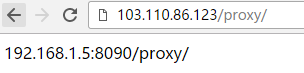
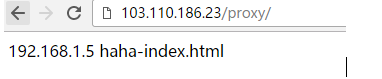
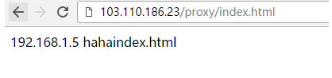
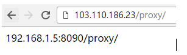

1 环境
OS:centos7
nginx _proxy服务器：192.168.1.23
2 情况说明
2.1 path路径后面加”/”
2.1.1 情况一
NGINX配置
1 | [root@localhost conf.d]# cat test.conf |
这样，访问http://192.168.1.23/proxy/就会被代理到http://192.168.1.5:8090/。匹配的proxy目录不需要存在根目录/var/www/html里面
注意，终端里如果访问http://192.168.1.23/proxy（即后面不带”/”），则会访问失败！因为proxy_pass配置的url后面加了”/”
访问结果如下
1 | [root@localhost conf.d] |
2.1.2 情况二
1 | [root@localhost conf.d]# cat test.conf |

2.1.3 情况三
1 | [root@localhost conf.d]# cat test.conf |
这样配置的话，访问http://103.110.186.23/proxy代理到http://192.168.1.5:8090/haha/

2.1.4 情况四
相对于第三种配置的url不加”/”
1 | [root@localhost conf.d]# cat test.conf |
注意，这种情况下，不能直接访问http://192.168.1.23/proxy/，后面就算是默认的index.html文件也要跟上，否则访问失败！

———————————————————————————————————————————
上面四种方式都是匹配的path路径后面加”/”，下面说下path路径后面不带”/”的情况：
2.2 path路径后面不加”/”
2.2.1 情况一
proxy_pass后面url带”/”：
1 | [root@localhost conf.d]# cat test.conf |

2.2.2 情况二，
proxy_pass后面url不带”/”
1 | [root@localhost conf.d]# cat test.conf |
这样配置的话，访问http://103.110.186.23/proxy会自动加上”/”（即变成http://103.110.186.23/proxy/），代理到192.168.1.5:8090/proxy/

2.2.3 情况三
1 | [root@localhost conf.d]# cat test.conf |

2.2.4 情况四
相对于第三种配置的url不加”/”
1 | [root@localhost conf.d]# cat test.conf |
这样配置的话，访问http://103.110.186.23/proxy，和第三种结果一样，同样被代理到http://192.168.1.5:8090/haha/